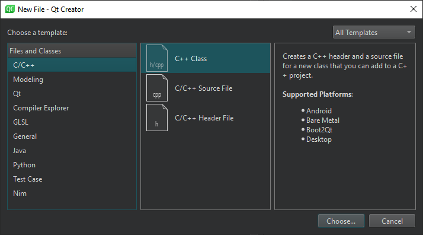

Create files
Use wizard templates to add individual files to your projects.
To add files to projects, select File > New File, and then select the type of the file.

Note: You can also use the f locator filter to create a new file and open it in the editor. However, you must manually add the created file to a project.
Select file type
The following table lists the types of wizard templates that you can use for creating files. The New File dialog shows detailed information about each file wizard template.
| Category | Purpose |
|---|---|
| C/C++ | Header and source files for new classes. |
| Modeling | State Chart XML (SCXML) files, Universal Modeling Language (UML) style models, and scratch models that use a temporary file. |
| Qt | Source and header files for item, table, or list models, Qt Designer forms and a matching classes for Qt Widgets projects, Qt resource and translation files, as well as QML and JavaScript files for Qt Quick projects. |
| Compiler Explorer | Example setup for using Compiler Explorer to compile C++ or Python code. |
| GLSL | OpenGL fragment and vertex shaders. |
| General | Markdown files, empty files that you can save with any filename extension, and scratch buffers that use temporary files. |
| Java | Class files. |
| Python | Class and script files for Python projects. |
| vcpkg (experimental) | vcpkg package manager manifest files (vcpkg.json). |
| Test Case | Test framework specific file holding a new test case, to be added to projects already using a test framework. |
| Nim (experimental) | Empty Nim source and script files. |
See also Navigate with locator, How To: Add Files, Add tests to existing test projects, Create UML-style models, and Use project wizards.